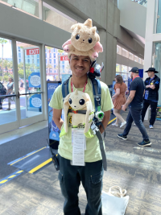

Anthony Estrella's Information

Favorite Quote
It ain't over til it's joever
- quote from my mentor
Who Am I? - Expanded
20 Year old UCSD Junior born in 2006 with an interest in coding and music. Born to a single mother, and later adopted by my step father, I have been working hard all of my life to get myself to this point. My main interest as of writing this is music, especially old school music players like Discman, Boomboxes, and especially MP3 Players.
What Drives Me
The main thing driving me to work hard everday is the feeling of being someone's saviour. Not in the typical prince charming way, but in the "Anthony is here, so I know things will be okay" way. This stems from a helplessness I felt as a child, when things would happen that seemed almost impossible to deal with. I never wanted anyone else to feel this way and as such, take joy in roles where I help others. This has mainly translated to job positions with a heavy emphasis on customer service roles.
Five Phrases that Describe Me
Phrases that have ascribed to me.
- Quick Witted - Comic Con Supervisor
- Best Lost & Found - Student who Lost Their ID
- Key King - Professor Locked out of Their Office
- Best Cleaner - Data Center Supervisor
- Dork - Mother